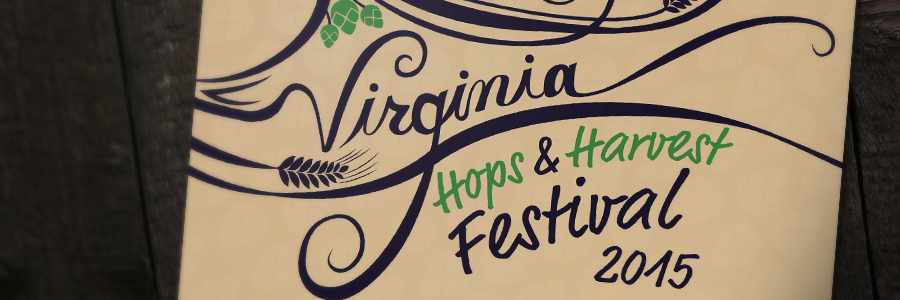
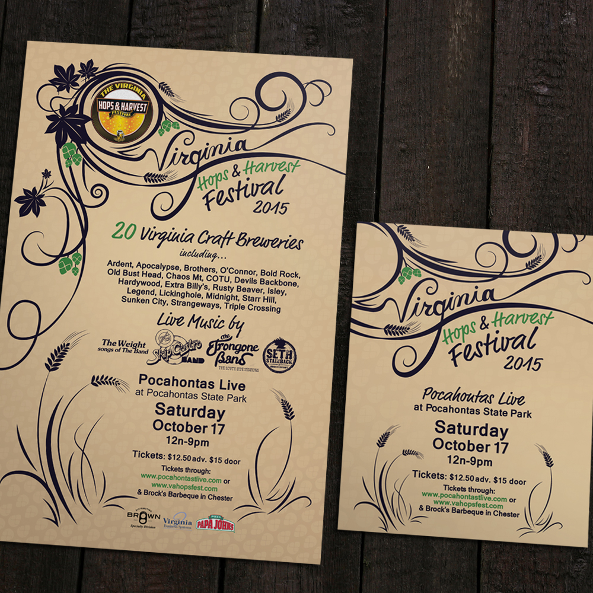

Virginia Hops & Harvest Festival
PRINT DESIGN
The Virginia Hops and Harvest Festival is an annual beer festival, featuring food, live music, and lots of local brews. They needed posters and handbills to use as promotional material, incorporating the logo they already had. I chose to go for a flowing, elegant look overall featuring lots of lines reminiscent of vines, hops, and plantlife. Something that would look right at home in a local farmer’s market.

PROJECT OUTCOME
The promotional material designed for the event caught a lot of attention, and the turnout was higher than expected. The Hops and Harvest Festival has continued to be held annually ever since.WHAT I DID
- Created poster and handbill layouts
- Designed a custom typeface for the header of the poster that would flow along with the vine and plantlike graphics surrounding it
- Designed custom graphics that fit the theme of the event, and established a theme